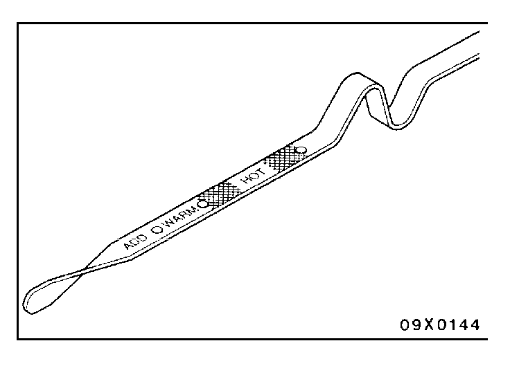
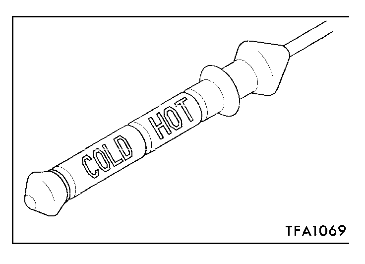
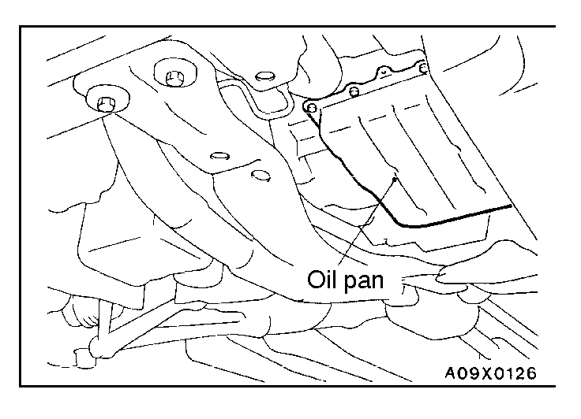
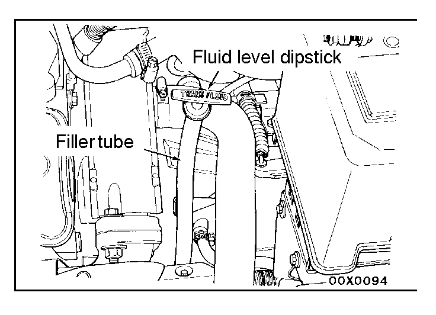
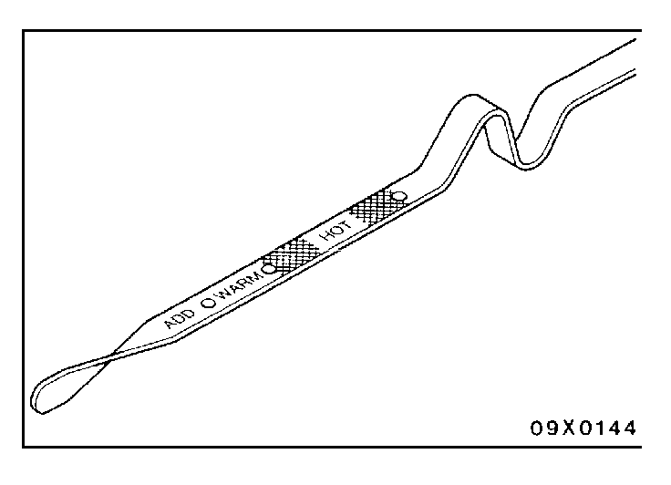
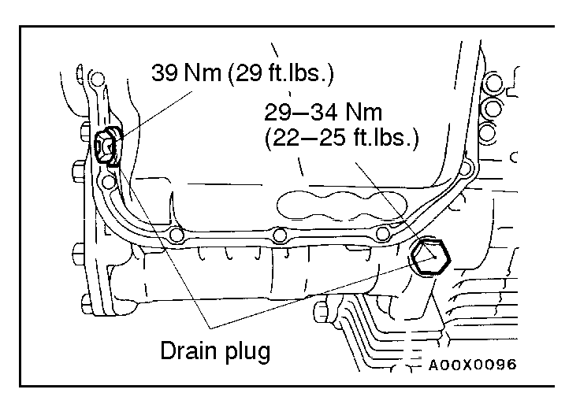
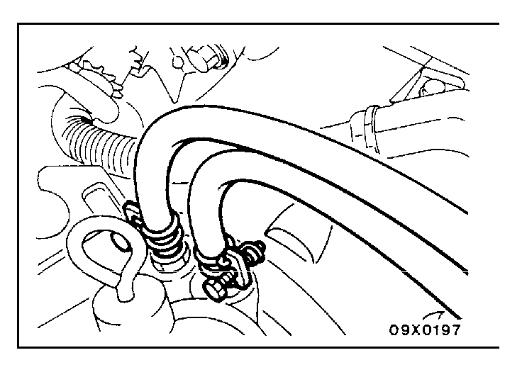

![[Previous]](https://mitsubishitechinfo.com/data/F24S/BUTTONS/fprevg.png)
![[Next]](https://mitsubishitechinfo.com/data/F24S/BUTTONS/fnextg.png)
      

12.AUTOMATIC TRANSAXLE FLUID
(Check fluid level)
<2.0L Engine (Non-turbo)>
1.Position the vehicle on a level surface.
2.Start engine and allow it to idle in PARK for at least 60 seconds. The warmer the transaxle fluid, the more accurate the reading.
3.While sitting in the driver seat, apply the brakes and place the gear selector in each position. Return gear selector to PARK.
4.Raise the hood and remove the transaxle fluid level indicator (dipstick) and wipe clean with a suitable shop towel.
5.Install the dipstick and verify it is seated in the fill tube.
Caution
Do not overfill automatic transaxle, leakage or damage can result.
6.Remove the dipstick, with handle higher than the tip, take a fluid level reading. If the vehicle has been driven for at least 15 minutes before inspecting the fluid level, the transaxle can be considered hot and the reading should be above the WARM mark. If the vehicle has run for less than 15 minutes and more than 60 seconds, the transaxle can be considered warm and reading should be above the ADD mark. Add fluid only if the level is below the ADD mark on the dipstick when the transaxle is warm.
<Turbo>
1.Drive the vehicle until the fluid temperature rises to the normal temperature [70 - 80°C (158 - 176°F)].
2.Park the vehicle on a level surface.
3.Move the selector lever through all positions to fill the torque converter and the hydraulic circuits with fluid, and then move the selector lever to the N position.
4.After wiping off any dirt around the dipstick, remove the dipstick and check the condition of the fluid.
NOTE
If the fluid smells as if it is burning, it means that the fluid has been contaminated by the particles from the bushes and friction materials, a transaxle overhaul and flushing the cooler line may be necessary.
5.Check that the fluid level is at the HOT mark on the dipstick. If the fluid level is lower than this, pour in more fluid until the level reaches the HOT mark.
Transmission fluid:
DIAMOND ATF SP II, DIAMOND ATF SP II M or equivalent
NOTE
If the fluid level is low, the oil pump will draw in air along with the fluid, which will cause bubbles to form inside the hydraulic circuit. This will in turn cause the hydraulic pressure to drop, which will result in late shifting and slipping of the clutches and brakes.
If there is too much fluid, the gears can churn it up into foam and cause the same conditions that can occur with low fluid levels.
In either case, air bubbles can cause overheating and oxidation of the fluid which can interfere with normal valve, clutch, and brake operation. Foaming can also result in fluid escaping from the transaxle vent, in which case it may be mistaken for a lead.
6.Securely insert the oil level gauge.
7.The fluid and oil filters should always be replaced in the following conditions:
When troubleshooting the transaxle
When overhauling the transaxle
When the oil is noticeably dirty or deteriorates (driving under the severe condition)
Furthermore, the oil filters are special filters which are only to be used for the automatic transaxle.
(Change fluid)
<Non-turbo>
1.Place a drain container with a large opening, under the transaxle oil pan.
2.Loosen the pan bolts and tap the pan at one corner to break it loose allowing fluid to drain, then remove the oil pan.
3.Install a new filter and O-ring on bottom of the valve body.
4.Clean the oil pan and magnet.
Apply the specified sealant to the oil pan.
Specified sealant:
Loctite 18718 or equivalent
Tighten the oil pan mounting bolts to the specified torque:
Tightening torque:
19 Nm (14 ft.lbs.)
5.Add 3.8 dm3 (4.0 qts.) of the specified transmission fluid through the filler tube.
Specified fluid:
DIAMOND ATF SP II or equivalent
6.Start the engine and allow it to run at idle for at least one minute. Then, with parking and service brake applied, move the selector lever momentarily to each position, ending in the park or neutral position.
7.Add sufficient fluid to bring level to 1/8 inch below the ADD mark.
8.Recheck fluid level after transaxle is at normal operating temperature. The level should be in the HOT region.

<Turbo>
If you have a fluid changer, use this changer to replace the fluid. If you do not have a fluid changer, replace the fluid by the following procedure.
1.Disconnect the transaxle connection of the hose which connects the transaxle and the separate oil cooler (of the two hoses on top of the transaxle, the one which runs toward the rear of the vehicle).
Caution
After disconnecting the hose from the transaxle, plug the transaxle nipple so that dust and other foreign materials cannot get in.
2.Start the engine and let the fluid drain out.
Running conditions: N range with engine idling
Caution
The engine should be stopped within one minute after it is started. If the fluid has all drained out before then, the engine should be stopped at that point.
Discharge volume: Approx. 2.5 dm3 (2.6 qts.)
3.Remove the drain plug from the bottom of the transaxle case to drain the fluid.
Discharge volume: Approx. 2.5 dm3 (2.6 qts.)
4.Replace the oil filters.
5.Install the drain plug via a new gasket, and tighten it to the specified torque.
6.Pour the new fluid in through the oil filler tube.
Adding volume: Approx. 5.0 dm3 (5.3 qts.)
Caution
Stop pouring if the full volume of fluid cannot be poured in.
7.Repeat the procedure in step 2.
NOTE
Drain the fluid from the cooler hose 5.0 dm3 (5.3qts.) at least (by the same procedure given in step 2 and step 7). Then drain the fluid a little and check the fluid for dirt.
If it has been contaminated, repeat the steps 6 and 7.
8.Pour the new fluid in through the oil filler tube.
Adding volume: Approx. 2.5 dm3 (2.6 qts.)
9.Reconnect the hose which was disconnected in step 1 above, and firmly replace the dipstick.
10.Start the engine and run it at idle for 1 - 2 minutes.
11.Move the selector lever through all positions, and then move it to the N position.

12.Check that the fluid level is at the COLD mark on the dipstick. If the level is lower than this, pour in more fluid.
13.Drive the vehicle until the fluid temperature rises to the normal temperature [70 - 80°C (158 - 176°F)], and then check the fluid level again.
The fluid level must be at the HOT mark.
NOTE
The COLD level is for reference only; the HOT level should be regarded as the standard level.
14.Firmly insert the dipstick into the oil filler tube.